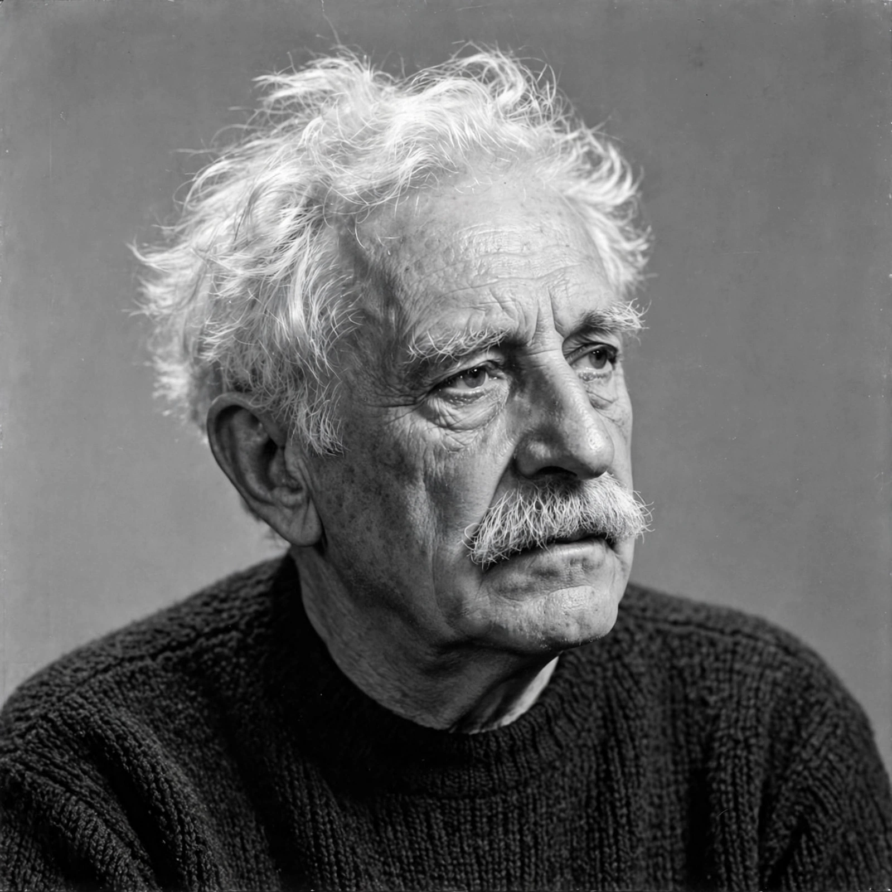

Albert Einstein
| Born | 14 March 1879, Ulm, German Empire |
|---|---|
| Died | 18 April 1955 (aged 76), Princeton, New Jersey, U.S. |
| Known for | Theory of relativity; E = mc²; photoelectric effect |
| Awards | Nobel Prize in Physics (1921) |
Albert Einstein was a German-born theoretical physicist widely regarded as one of the most influential scientists of all time, best known for developing the theory of relativity.

[Image: Albert Einstein in later life, with his distinctive white hair]Miracle year and relativity
In 1905, his annus mirabilis, while working as a patent clerk in Bern, Switzerland, Einstein published four groundbreaking papers, introducing special relativity and the mass–energy equivalence formula E = mc². In 1915 he completed general relativity, a geometric theory of gravitation, confirmed famously by observations of the 1919 solar eclipse.
Emigration and later life
Einstein emigrated to the United States in 1933, arriving on 17 October that year as a refugee from Nazi Germany, and settled at Princeton. He became a US citizen in 1940. In 1939 he signed a letter to President Franklin D. Roosevelt warning that Germany might develop atomic weapons, urging American research — a step he later expressed regret about. He spent his later years, unsuccessfully, seeking a unified field theory, and was a prominent voice on civil rights, pacifism and Zionism.
See also: Theory of relativity · October 17